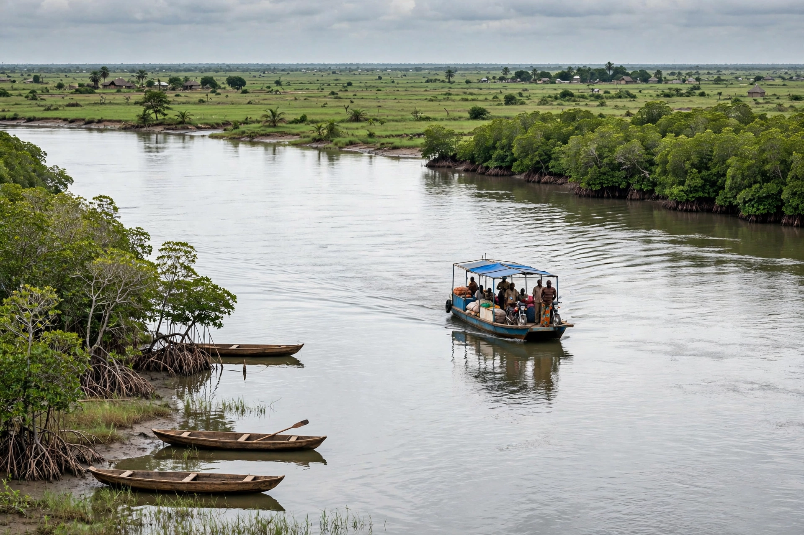

[Image placeholder: The Gambia River, around which the country is shaped]| Capital | Banjul |
|---|---|
| Largest city | Serekunda |
| Population | About 2.7 million |
| Independence | 1965, from Britain |
| Geography | A narrow strip along the Gambia River, surrounded by Senegal |
**The Gambia**, officially the Republic of The Gambia, is a country in West Africa almost entirely surrounded by Senegal, except for a short Atlantic coastline. It is the smallest country on mainland Africa, a narrow strip (less than 50 km wide) stretching about 480 km along the Gambia River — a geography drawn by Anglo-French colonial rivalry over the river's trade.
The Gambia was a hub of the transatlantic slave trade (memorialised on Kunta Kinteh Island, formerly James Island); Roots author Alex Haley traced his ancestry to the village of Juffureh here. Independence came in 1965 under Dawda Kairaba Jawara. Yahya Jammeh seized power in 1994 and ruled increasingly erratically until 2017, when election defeat and West African (ECOWAS) military pressure forced him into exile and Adama Barrow took office — a rare democratic transfer in the region. Tourism (beaches, birdwatching), groundnuts and remittances drive the economy.
The low-lying country rarely exceeds 60 m in elevation, making it highly vulnerable to sea-level rise and river flooding. The Gambia River dominates transport, ecology and history; mangrove swamps line its lower reaches.